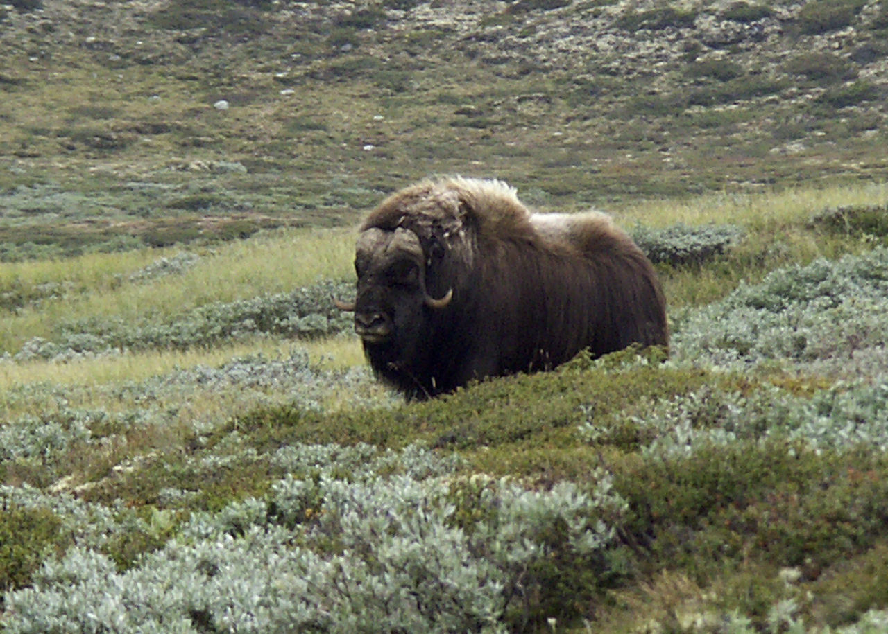

Tietoa
Norjan luonto
Luonto
Norjan mannerosasta 37% on metsän peitossa.
Ilmasto
Norjan rannikoilla vallitsee lauhkea meri-ilmasto.
Maantiede
Norja rajoittuu lännessä Norjanmereen, etelässä Skagerrakin salmeen ja pohjoisessa Barentsinmereen.
Norjan rannikko on hyvin mutkitteleva, ja siinä on suuri joukko pitkiä ja kapeita vuonoja.
Norjan pisin ja syvin vuono on Sognevuono. Se on 200 kilometriä pitkä.
Norjassa on runsaasti järviä ja jokia. Suurin järvi on Mjøsa ja suurimmat joet Glomma, Gudbrandsdalslågen eli Lågen sekä Teno.

Tossa noin on kuva Sognevuonosta
 Tossa noin on kuva Myskihärästä